Yummer – Vue 3 Food Delivery App Documentation by George_FX v1.0
Yummer – Vue 3 Food Delivery App
Thank you for purchasing my theme. If you have any questions that are beyond the scope of this help file, please feel free to email via my user page contact form here . Thanks so much!
Before setting up the project, you should have a basic understanding of the following technologies: HTML, CSS, JavaScript, Vue, Node.js, and npm. For more information, visit the official documentation: HTML , CSS , JavaScript , Vue , Node.js , npm .
Follow these steps to set up the project:
- 1. Important Requirements
- 2. Folder structure
- 3. Install environment
- 4. Install dependencies
- 5. Change Assets
- 6. Customization
- 7. Run the project
- 8. Build the project
- 9. Deploy the project
- 10. API Usage
- 11. API Integration
- 12. Support and Dependencies
- 13. Changelog
1. Important Requirements
The project is built with the following versions:
Node.js:
Version
24 or higher
is required to run the project.
[Node.js Official Site]
Vue:
The project is built with
Vue 3
.
[Vue Official Site]
npm:
Version
11
was used for dependency management.
[npm Official Site]
Please ensure your development environment matches these versions for optimal compatibility and performance.
To check your installed versions, run:
node -v
,
npm -v
in your terminal. If you need to update, follow the links above to
download the latest versions.
2. Folder structure
The project follows the Feature-Sliced Design (FSD) architectural methodology. FSD organizes code into layers , each layer is divided into slices (by business domain), and each slice consists of segments (by technical purpose). Modules on a given layer can only import from layers strictly below it.
- src / app: Application entry point — routing setup, global styles, and providers.
- src / pages: Full-page components. Each screen represents a separate route and assembles widgets and features into a complete view.
- src / widgets: Large self-contained UI blocks that combine features and entities into meaningful interface sections.
- src / entities: Business entities the project works with (e.g. products, catalog items). Contains entity-specific UI, models, and API calls.
- src / shared: Reusable composable functions with no dependency on business domain — shared logic across the entire application.
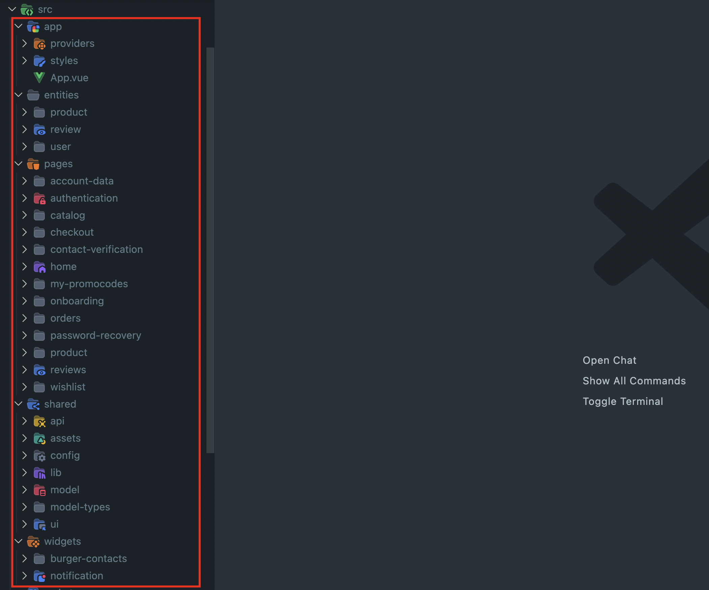
main.ts
is the main entry point of the application, where the Vue app is
created and mounted.
3. Install environment
Your computer should have Node.js (version 24 or higher) and npm installed to manage the dependencies. You can download Node.js (which includes npm) from the following link: Node.js
To verify your installation, run the following commands in your
terminal:
node -v
and
npm -v

4. Install dependencies
To install the project dependencies, run the following command in the
project directory:
npm install
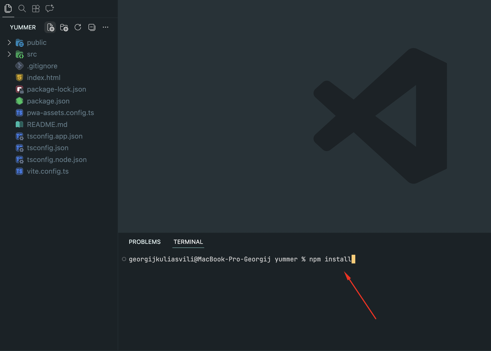
This command will install all the necessary dependencies for the project.
5. Change Assets
All project assets are located in the
src/shared/assets
folder.
To replace an asset, simply swap the corresponding file with your own, ensuring the file name and format remain the same for proper functionality.
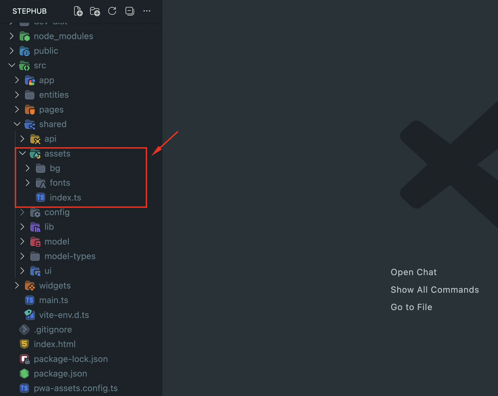
Additionally, some images in the project are loaded via external URLs. To replace these, locate the relevant URL in the code and update it with your new image link.
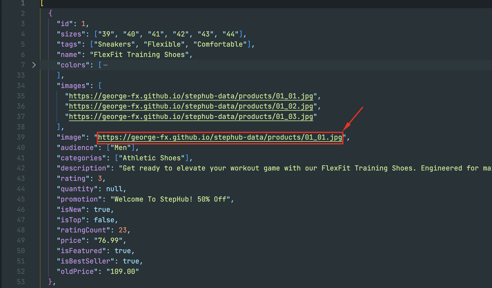
6. Customization
The project uses both global and screen-specific styles. Global styles
and variables are located in the
src/app/styles
folder and apply to the entire application. In addition, each screen
(or page) can have its own styles stored in the
src/pages/*
folder, allowing for scoped styling without conflicts between
different components.
The image below shows an example of global CSS files located in the
src/app/styles
folder.
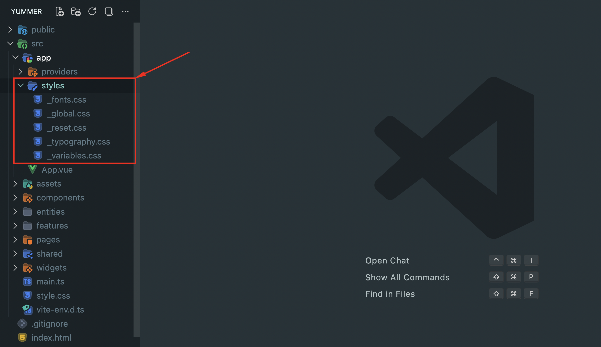
The image below shows an example of screen-specific CSS files located
in the
src/pages/*
folder.
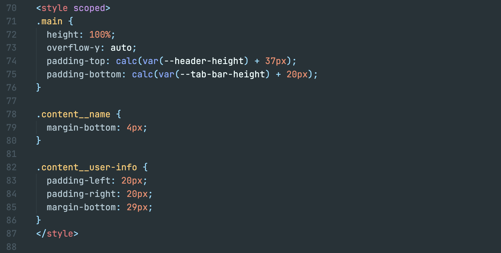
7. Run the project
To run the project, use the following command:
npm run dev
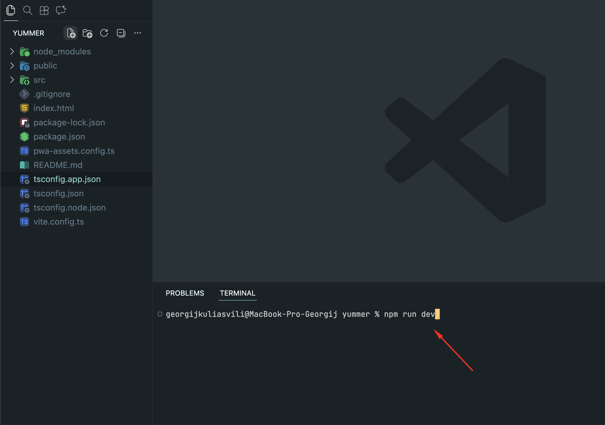
The development server will start at
http://localhost:5173
by default.
The page will automatically reload when you make changes to the code.
8. Build the project
When you're ready to deploy your application, create an optimized
production build by running:
npm run build
This command compiles your Vue application, minifies the code, and optimizes assets for the best performance. The build process may take a few minutes depending on your project size.
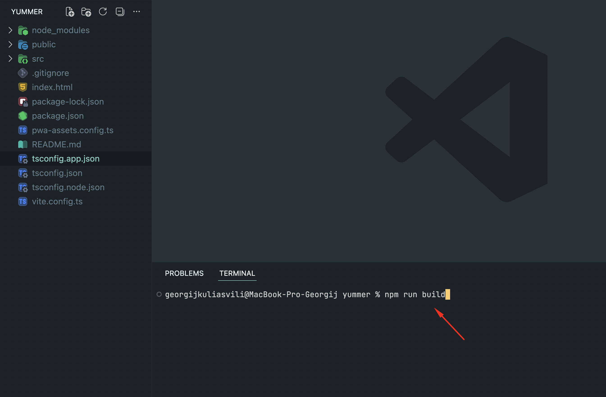
After the build completes, a
dist
folder will be created containing all the production-ready files. You
can preview the build locally before deployment by running:
npm run preview
9. Deploy the project
Once the build is complete, the
dist
folder contains all the static files needed for deployment. You can
host your application on any static hosting service.
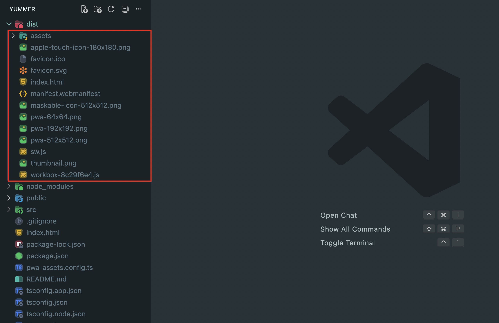
Popular hosting platforms for Vue applications:
- Vercel — Zero-config deployment with automatic CI/CD
- Netlify — Simple drag-and-drop or Git-based deployment
- GitHub Pages — Free hosting for static sites (requires additional configuration for SPA routing)
To deploy manually, upload all contents from the
dist
folder to your web server's public directory (e.g.,
public_html
or
www
). Ensure your server is configured to serve
index.html
for all routes to enable client-side routing.
10. API Usage
By default, the application uses mock data provided by a fake API
located in the
src/shared/api/mocks
folder. This approach allows you to develop and test the app’s
features without connecting to a real backend server.
The
src/shared/api/mocks
directory contains the following JSON files, each representing a
specific data set used throughout the application:
- onboarding.json
- dishes.json
- offers.json
- promocodes.json
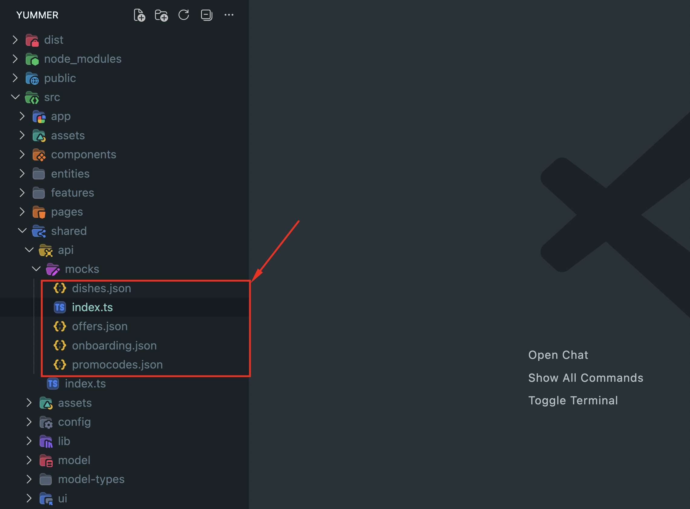
11. API Integration
To integrate APIs into your application, you can call them directly
inside your Vue components using
axios
or another HTTP client. Simply place your API requests in the
onMounted
lifecycle hook or a component method to fetch and handle data as
needed. For example, you can easily fetch products and display them in
your component:
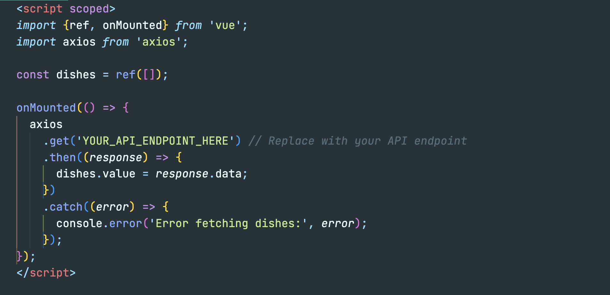
12. Support and Dependencies
If you have any questions or need support, please contact me via
email:
kul.giorgi@gmail.com
The project uses the following dependencies:
The project uses the following font:
13. Changelog
Version 1.0.0 – Initial Release (Apr 10, 2026)
- 20+ mobile-ready screens included
- Fully responsive and optimized UI
- Authentication (Sign in / Sign up / OTP)
- Clean and modern design
- Easy to customize and extend
- Built with Vue 3 and Vite